Яку — выигрышные комбинации
🔍 Фильтры яку
По ханам:
По типу руки:
По сложности:
🟡 Подсвеченные фишки — ключевые элементы яку
| — разделитель групп в примерах рук
🌟 Яку на 1 хан
Риичи (立直 Riichi) 1 хан Закрытая рука
• Закрытая рука в состоянии тенпай
• Объявить "Риичи!" и положить 1000 очков
• После объявления нельзя менять руку


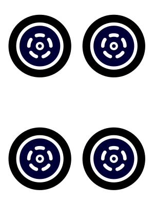
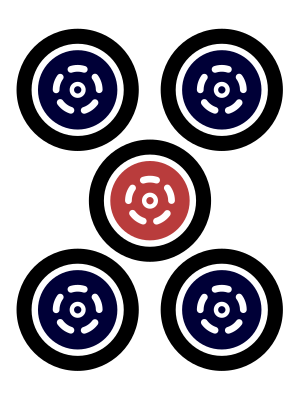
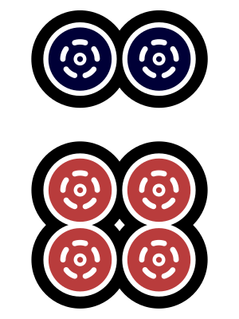
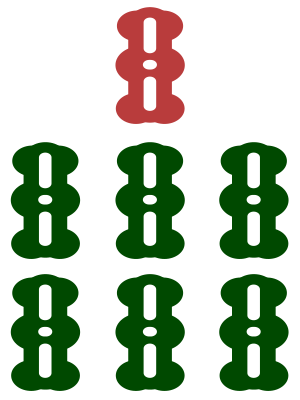

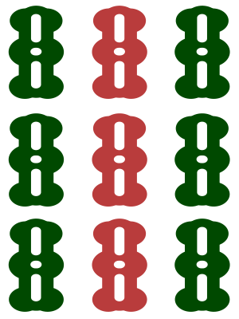
Ждём 2m или 5m. Объявляем Риичи!
Якухай (役牌) — Ценные фишки 1 хан Любая рука
• Любого дракона (白, 發, 中)
• Вашего личного ветра
• Преобладающего ветра раунда
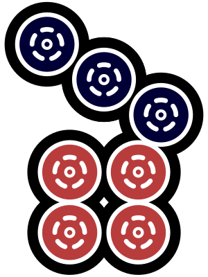
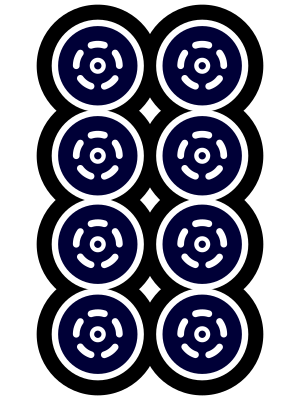
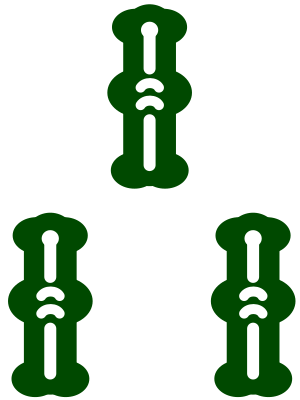
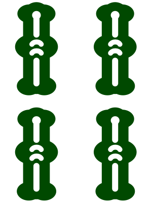
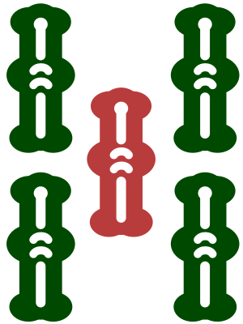
Сет белых драконов = +1 хан Якухай
Танъяо (断么九 Tanyao) — Все простые 1 хан Любая рука
• Только фишки 2-8
• Нет терминалов (1, 9)
• Нет почётных фишек
Все фишки в диапазоне 2-8
Пинфу (平和 Pinfu) — Мирная рука 1 хан Закрытая рука
• 4 последовательности (без сетов)
• Пара не из ценных фишек
• Ожидание на две стороны

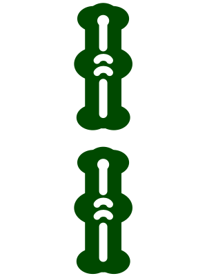
Ждём 1s или 4s. Все группы — последовательности.
🎖️ Яку на 2 хана
Тойтой (対々和 Toitoi) — Все сеты 2 хана Любая рука
• 4 сета + пара
• Нет ни одной последовательности
Только манзу + почётные фишки
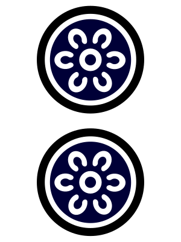

Четыре сета — никаких последовательностей